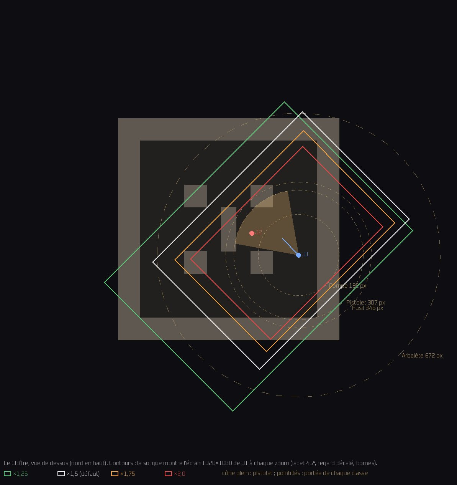
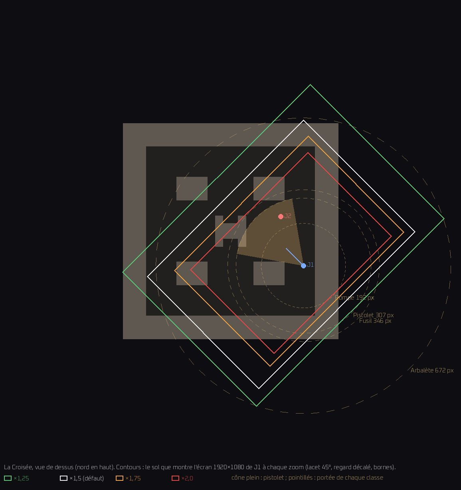

Le zoom du duel — ×1,25, ×1,5 (défaut), ×1,75, ×2,0
Q15 · session cloud « zoom » · lacet 45° (option B), regard décalé 0,15, portée des torches ×0,75 — les défauts du jeu, seul le zoom change. Images du rendu logiciel du cloud (llvmpipe) : fidèles pour le noir, les couleurs et les tailles, pas pour la cadence. Cliquer une image l'ouvre en 1920×1080.
Ce que chaque zoom gagne et perd, d'après les images
Pas de recommandation : c'est ta décision. Ce qui suit décrit les images et les chiffres plus bas.
| Zoom | Ce qu'il gagne | Ce qu'il perd |
|---|---|---|
| ×1,25 | La vue d'ensemble : on voit 562 px de sol devant soi (un pistolet porte à 307) et 302 derrière. Au sommet de la respiration des LED, tout Le Cloître tient à l'écran. L'arbalète voit 84 % de son faisceau. | Les corps sont petits (39 × 44 px sur un écran 1080p). L'adversaire au bord du cône n'est qu'une tache sombre. Beaucoup d'écran noir. Sur La Croisée (28 cases), la caméra ne se borne plus en largeur : près d'un bord, une grande part de l'image est du vide hors carte. C'est la vue la moins étouffante. |
| ×1,5 (défaut) | Un corps de 47 × 52 px. La torche du pistolet occupe les deux tiers de l'espace devant soi. On voit encore 468 px devant et 252 derrière, et à peu près la moitié de la carte (54 à 57 %). | Un adversaire posté derrière toi à portée de pistolet est hors de l'image. L'arbalète ne voit que 70 % de son faisceau quand elle vise vers le haut de l'écran. |
| ×1,75 | Des corps nettement plus lisibles (55 × 60 px), des murs qui prennent du volume. Deux cinquièmes de la carte à l'écran : le duel se resserre. | Plus que 216 px de vue derrière soi. Le faisceau du pistolet remplit les trois quarts de l'espace devant. L'arbalète ne voit que 60 % de sa portée. |
| ×2,0 | Le plus gros plan : un corps de 62 × 69 px (83 × 92 sur ton écran 1440), la matière des murs et du sol se lit, moins de vide hors de la carte à l'image. La vue la plus étouffante. | Le bout du faisceau du pistolet frôle le bord de l'écran (88 %). Le fusil y arrive tout juste (sa limite est ×2,03). L'arbalète voit la moitié de son faisceau. Il reste 189 px de vue derrière soi, moins que la portée de la pompe (192 px) : une pompe peut t'éclairer depuis un point hors de ton cadre. Un tiers de la carte à l'écran. |
Qui voit l'autre en premier. Au lacet 45° option B, les deux joueurs sont cadrés de la même façon à chaque zoom (la même règle pour les deux écrans ; dans les huit scènes, chacun a l'autre dans son cadre) : le zoom ne rompt pas l'équité. Ce qui décide, c'est le regard décalé : celui qui regarde vers l'autre voit 1,86 fois plus loin que celui qui lui tourne le dos (visée vers le haut de l'écran : 702 px d'écran devant, 378 derrière ; 1,55 fois en visée horizontale). Ce rapport ne change pas avec le zoom. Le zoom change la distance, en pixels du monde. Face à face, l'autre entre dans ton cadre à 562 px à ×1,25, à 468 à ×1,5, à 401 à ×1,75 et à 351 à ×2,0. De dos, on perd l'autre de vue au-delà de 302, 252, 216 et 189 px. À tous ces zooms, un tireur posté derrière toi à portée de pistolet est donc hors de ton écran (à ×1,25, de justesse).
Ce que le zoom ne change pas. La portée des torches est la même à tous les zooms (×0,75, un réglage à part). Le regard décalé fait toujours 162 px d'écran. Il n'ajoute aucune lumière : il agrandit ce que les torches montrent déjà. Sur ton écran 2560×1440, le cadrage est le même : tout est un tiers plus grand en pixels.
Les images
Le Cloître — Vue unique 1920×1080 — ce que voit J1 (bandeau LED au creux)


Le Cloître — La même, bandeau LED des murs au sommet de sa respiration


Le Cloître — Écran scindé au même instant — J1 à gauche, J2 à droite


Le Cloître — jusqu'où voit J1

La Croisée — Vue unique 1920×1080 — ce que voit J1 (bandeau LED au creux)


La Croisée — La même, bandeau LED des murs au sommet de sa respiration


La Croisée — Écran scindé au même instant — J1 à gauche, J2 à droite


La Croisée — jusqu'où voit J1

Les chiffres
Réglages du banc : BANC_ZOOM reglages lacet_j1=45 lacet_j2=225 option=B decalage=0.15 facteur_portee=0.75 fenetre=(1920, 1080) vue=(1920, 1080)
| Zoom | Corps de J1 sur l'image, 1080 lignes (L × H, px) | Corps sur 1440 lignes (×4/3) | Zone de touche (disque de 18 px) à l'écran, 1080 lignes | Torche du pistolet à l'écran, visée verticale / horizontale | …en part de la demi-hauteur / de la demi-largeur | …en part de l'écran DEVANT J1 (702 / 1166 px) |
|---|---|---|---|---|---|---|
| ×1,25 | 39 × 43 ; 39 × 44 | 52 × 57 ; 52 × 59 | 57 × 45 px | 384 / 487 px | 71 % / 51 % | 55 % / 42 % |
| ×1,5 | 47 × 52 ; 47 × 52 | 63 × 69 ; 63 × 69 | 69 × 54 px | 461 / 585 px | 85 % / 61 % | 66 % / 50 % |
| ×1,75 | 55 × 60 ; 54 × 60 | 73 × 80 ; 72 × 80 | 80 × 63 px | 538 / 682 px | 100 % / 71 % | 77 % / 59 % |
| ×2,0 | 62 × 69 ; 63 × 70 | 83 × 92 ; 84 × 93 | 91 × 72 px | 614 / 780 px | 114 % / 81 % | 88 % / 67 % |
Le regard décalé avance la caméra de 0,15 de la hauteur VISIBLE : à l'écran, c'est toujours 162 px, quel que soit le zoom. J1 se tient donc à 702 px du bord vers lequel il vise (visée verticale), à 1166 px en visée horizontale (162 / sin 52° = 206 px de décalage) — hors bornes de la carte. Le zoom grandit la torche, pas cet espace.
| Classe | Portée (px de monde) | Zoom au-delà duquel le bout de la torche sort de l'écran : visée verticale / horizontale |
|---|---|---|
| Pistolet | 307 | ×2,29 / ×2,99 |
| Fusil | 346 | ×2,03 / ×2,66 |
| Pompe | 192 | ×3,66 / ×4,78 |
| Arbalète | 672 | ×1,04 / ×1,37 |
Jusqu'où l'écran 1920×1080 montre le sol autour du joueur, en pixels de MONDE, hors bornes de la carte (calcul : caméra iso KEEP_HEIGHT, tangage 52°, décalage 0,15 ; vérifié contre la vraie caméra, écart 0 px) :
| Zoom | Visée verticale : devant / derrière / côtés | Visée horizontale : devant / derrière / côtés | Pistolet 307 px : part de la portée visible devant (vert. / horiz.) | Arbalète 672 px : idem |
|---|---|---|---|---|
| ×1,25 | 562 / 302 / 605 | 735 / 476 / 432 | 100 % / 100 % | 84 % / 100 % |
| ×1,5 | 468 / 252 / 504 | 612 / 396 / 360 | 100 % / 100 % | 70 % / 91 % |
| ×1,75 | 401 / 216 / 432 | 525 / 340 / 309 | 100 % / 100 % | 60 % / 78 % |
| ×2,0 | 351 / 189 / 378 | 459 / 297 / 270 | 100 % / 100 % | 52 % / 68 % |
| Carte | Zoom | Part de la carte à l'écran de J1 / de J2 | J1 voit devant / derrière / à gauche / à droite (px de monde, jusqu'au bord de l'image) | J2 idem | J1 a J2 à l'écran | J2 a J1 à l'écran | Scindé : J1 / J2 ont l'autre |
|---|---|---|---|---|---|---|---|
| Le Cloître | ×1,25 | 72 % / 76 % | 562 / 302 / 744 / 466 | 723 / 565 / 507 / 413 | oui | oui | oui / oui |
| Le Cloître | ×1,5 | 54 % / 60 % | 468 / 252 / 515 / 493 | 645 / 429 / 422 / 344 | oui | oui | oui / oui |
| Le Cloître | ×1,75 | 42 % / 47 % | 401 / 216 / 432 / 432 | 553 / 367 / 362 / 295 | oui | oui | oui / oui |
| Le Cloître | ×2,0 | 33 % / 37 % | 351 / 189 / 378 / 378 | 484 / 322 / 317 / 258 | oui | oui | oui / oui |
| La Croisée | ×1,25 | 71 % / 63 % | 562 / 302 / 605 / 605 | 774 / 514 / 413 / 507 | oui | oui | oui / oui |
| La Croisée | ×1,5 | 57 % / 63 % | 468 / 252 / 540 / 469 | 409 / 664 / 344 / 422 | oui | oui | oui / oui |
| La Croisée | ×1,75 | 44 % / 48 % | 401 / 216 / 432 / 432 | 430 / 490 / 295 / 362 | oui | oui | oui / oui |
| La Croisée | ×2,0 | 36 % / 36 % | 351 / 189 / 378 / 378 | 445 / 360 / 258 / 317 | oui | oui | oui / oui |
Classes relevées : Pistolet 307 px (demi-angle 35°) ; Fusil 346 px (demi-angle 10°) ; Pompe 192 px (demi-angle 60°) ; Arbalète 672 px (demi-angle 5°)